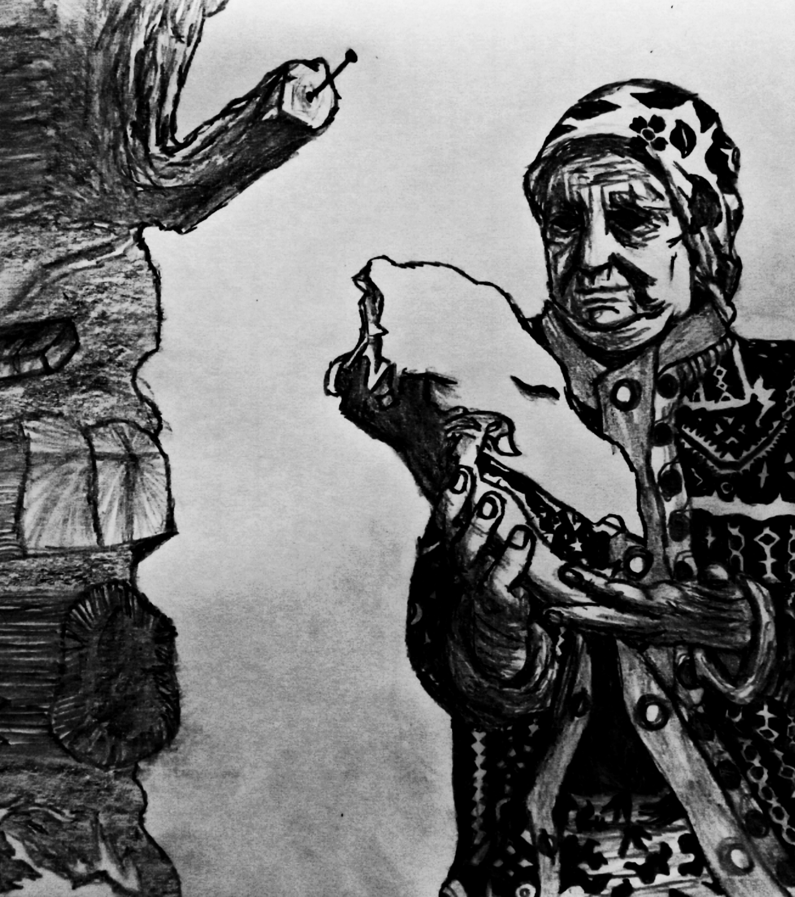
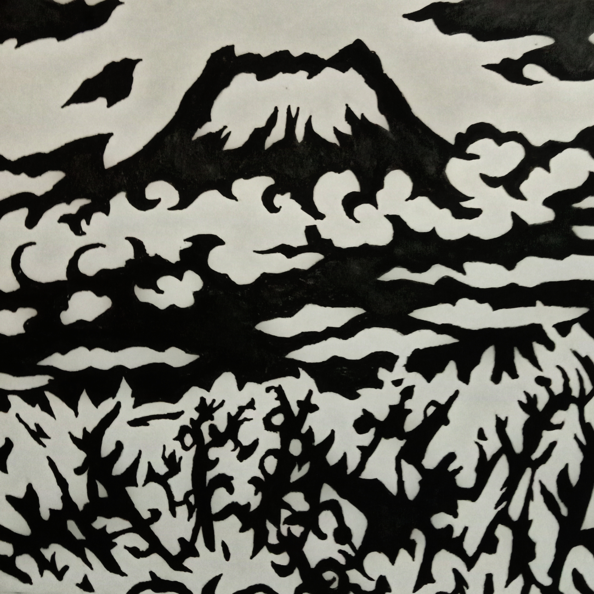
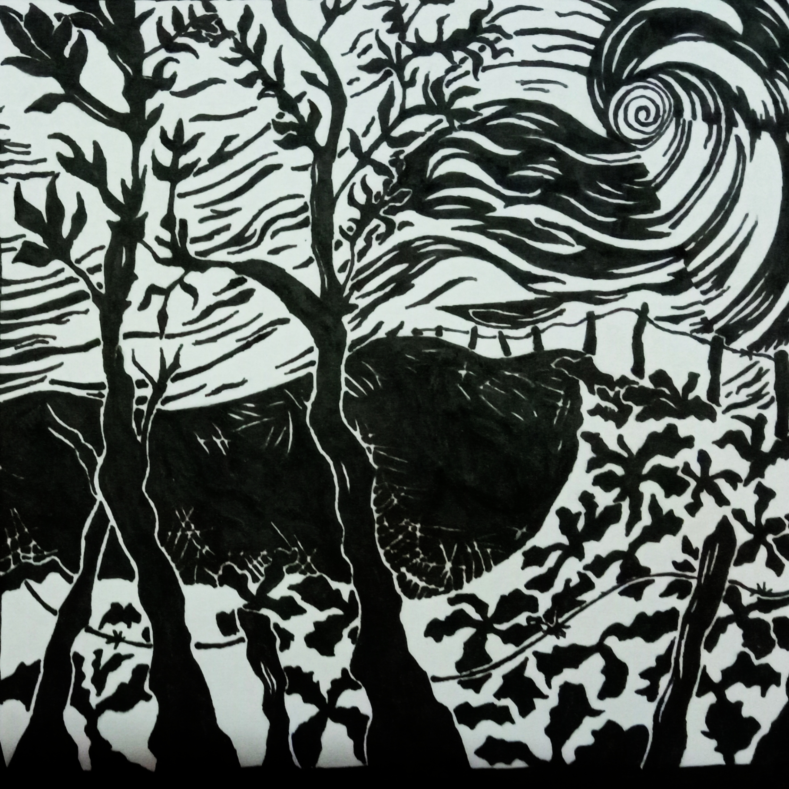

My Art
Here are some of the drawings and sketches I have made over the years...
|

I made this in 2020, it was one of the first sketches I spent my monotonous time of lockdown in and it came out pretty satisfactorily. |

Mt.Fuji is a painting that i felt fascinated by due to its imaginative nature of reality, I felt it was only right that i get to experience its beauty. |

An open field with the sky similar to Junji Ito's famous manga 'The Spiral'. |

A figure is seen standing at the foot of the mountain with a rather peculiar background, it seems it is a human yet vivid in nature with its very characteristic big eyes glaring into the unknown. |